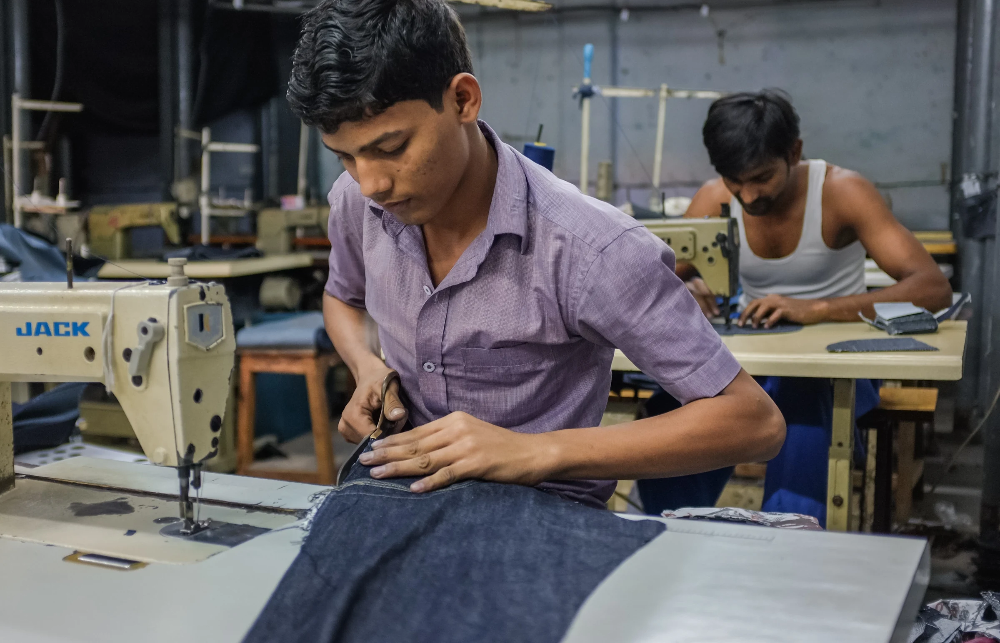
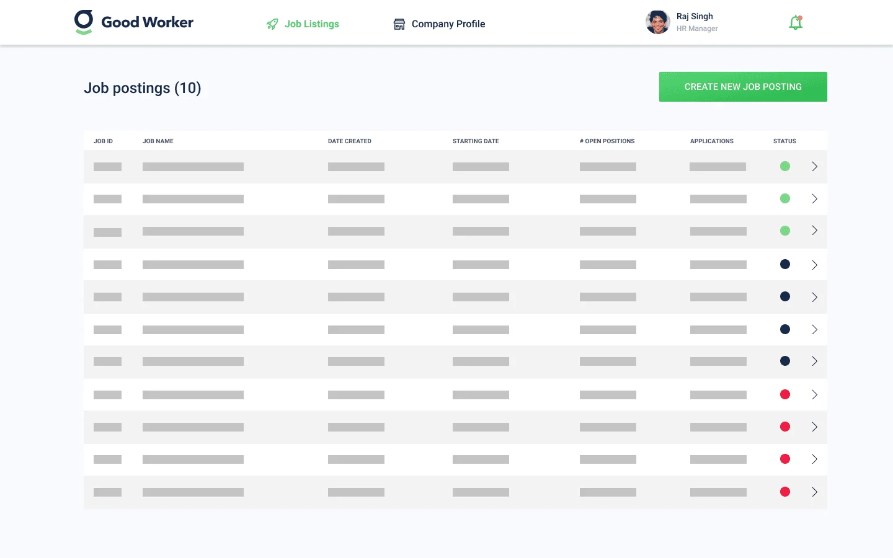
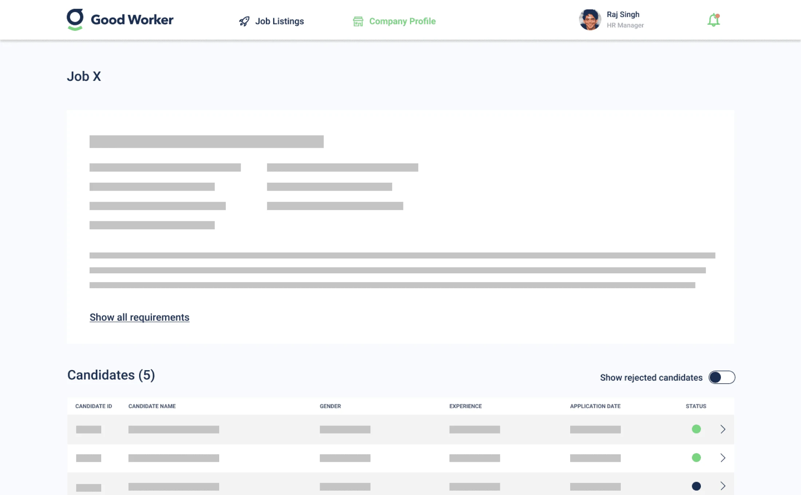
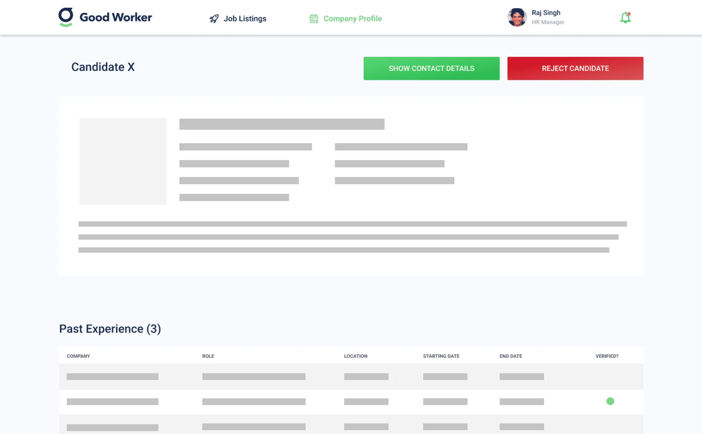
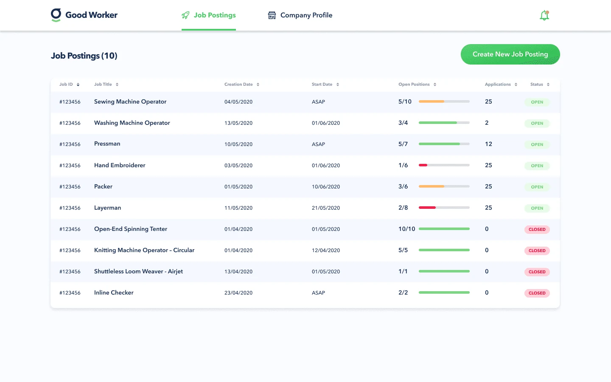
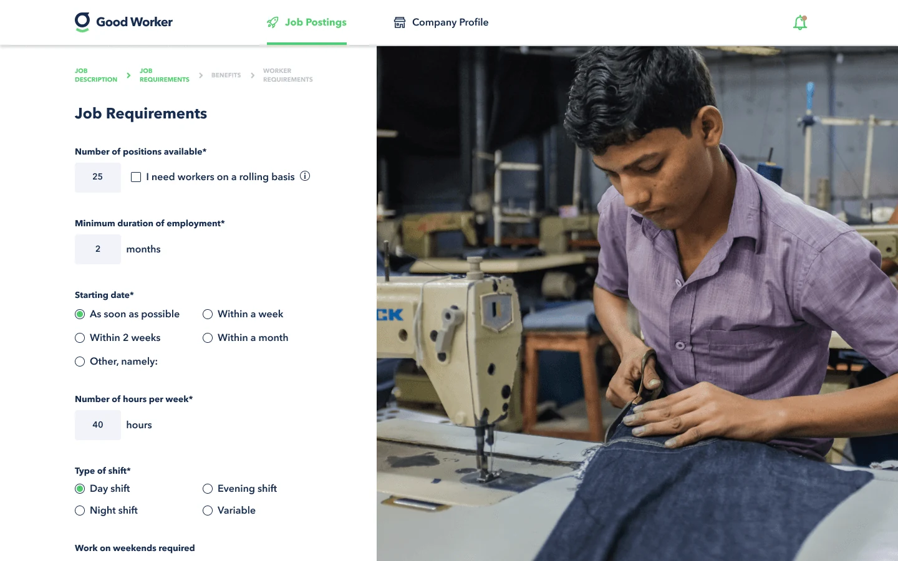
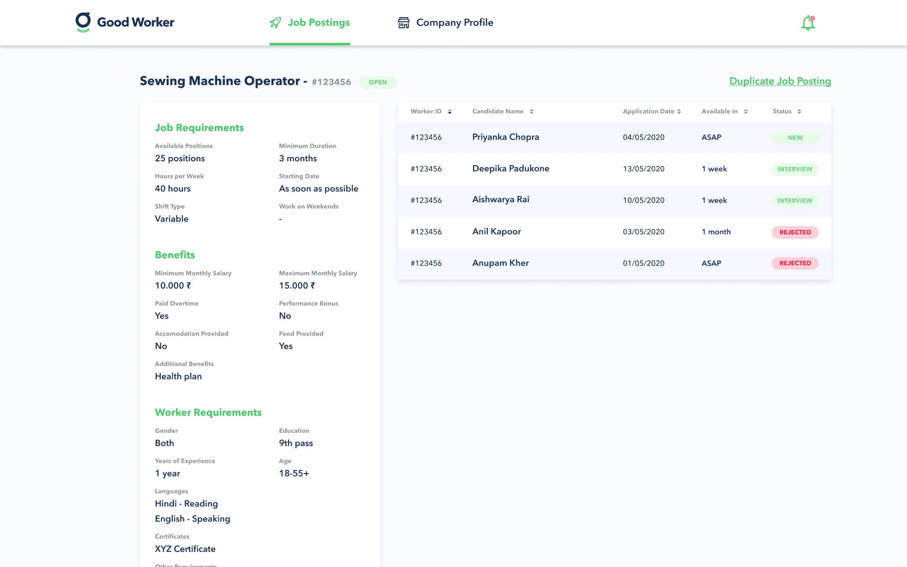
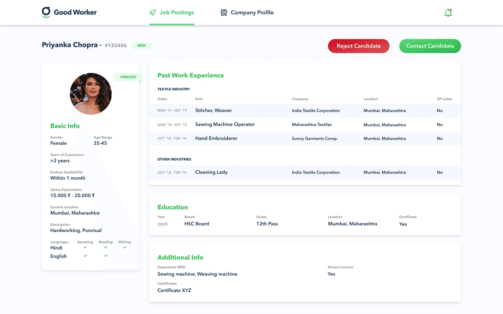

GoodWorker set out to give millions of people in India control of their livelihoods.
01 · Brief
There are four hundred and fifty million blue-collar workers in India. Most are hired through middlemen and have no formal record of their skills or employment history. GoodWorker wanted to fix that and needed three products to do it.
02 · Outcome
The employer portal shipped as the MVP for Temasek's GoodWorker platform. Usability testing with 10 employers caught issues that we fixed before launch. GoodWorker reached 1 million users in its first year but couldn't find enough employers to place them. It was sold in 2025.
Context.

The challenge was to design 3 different products. Workers would use an Android app, employers a responsive web app and operators a back-office tool.
India has 450 million blue-collar workers. They include security guards, delivery staff, construction labourers, housekeepers, maids, assembly line workers, plumbers, electricians and more. They work hard every day, but their situation is becoming unstable.
Inflation threatens their already meagre earnings. Applying for jobs through middlemen or agencies gives them little transparency. Recruitment agencies can exploit them, and employers can pay them late or unfairly. They might not get adequate training either, which could later cost them the job they rely on.
Contract employers struggle with workforce management too. They face a high risk of improper background checks. Workers are hard to find and match on skills, and recruitment takes a lot of time.
GoodWorker gives workers in India a digital, verified biodata on its platform. With it they can find jobs more easily, secure their livelihood and build a formal career. And employers can hire the right worker more efficiently and at lower cost.
What I did.
I joined halfway through the project to lead the product team: one junior designer, one researcher, one PM. My focus was end-to-end design of the employer portal, plus overseeing and mentoring the rest of the team.
I ran research interviews with employers and set the information architecture. I took the employer portal from wireframes through a tested high-fidelity prototype. I also made the call on what went into the MVP.
My process.
-
Research
When I joined the project, I interviewed several employers about their needs and pain points. I also did a UX competitor analysis to see what was already out there.
-
Conceptualise
Working from the research, we brainstormed features and created a user flow. Then we set the information architecture for the employer portal.
-
Design
I started with low-fidelity wireframes, built on the user flow and information architecture. Then I turned them into a high-fidelity prototype.
-
Test
We ran a usability test with 10 employers to gauge their interest and to spot UX design problems.
Research.
In the research we found three major pain points for our employer portal to solve:
- Workers' skills are hard to verify because there is little formal record of their employment history
- Relying on middlemen often makes hiring slow
- Replacements are hard to find when workers do not show up
That gave us this solution statement:
Allow employers to hire the right workers, at the right time.
Conceptualise.
We prioritised these features for the MVP of the employer portal:
- Create a job listing
- See candidates that applied for a job
- Contact candidates
Those features led to this information architecture:

After logging in, the user lands on the job listings overview page. From there they can create a new job posting, which then appears in the job listings.
From the job listings they can open any listing and see the candidates who applied for the job.
Clicking one of the candidates opens their profile, where the user can contact them about the role.
Wireframes.
I start every design phase by drawing up some wireframes.



Key decisions.
Scope the MVP to three flows
Of the three products, the employer portal had the clearest success metric: does an employer hire someone? I scoped the MVP to three flows (create a job posting, review candidates, contact one). I deferred everything else, so we could stay focused and learn faster.
Test wireframes before going high-fidelity
We ran 10 employer usability sessions on wireframes before touching any high-fidelity design. Those sessions caught a critical issue: employers wanted to see a candidate's location before their skills. So we flipped the order. Finding that kind of thing before hi-fi saves a lot of rework.
The final employer portal, tested and iterated before any pixel polish
Final designs.

Job postings
The job postings board lists all the available positions in the company. Each posting shows its status at a glance. From the board the user can open the detail view of any posting or create a new job posting. Job postings board: status at a glance, one click to the detail view
Create new job posting
Employers can easily create a new job posting and set all its requirements. Workers are then matched on those requirements.
Job detail page
The job detail page gives a clear overview of the job requirements and lists all candidates with their current status. Clicking a candidate takes the user to the candidate detail page.
Candidate detail page
The candidate profile shows the details of that candidate. From here the employer can reject or contact them, and contacting them reveals their phone number.